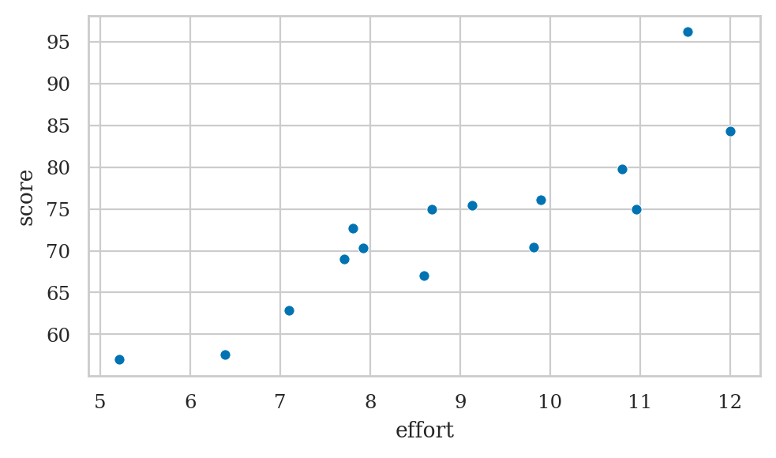
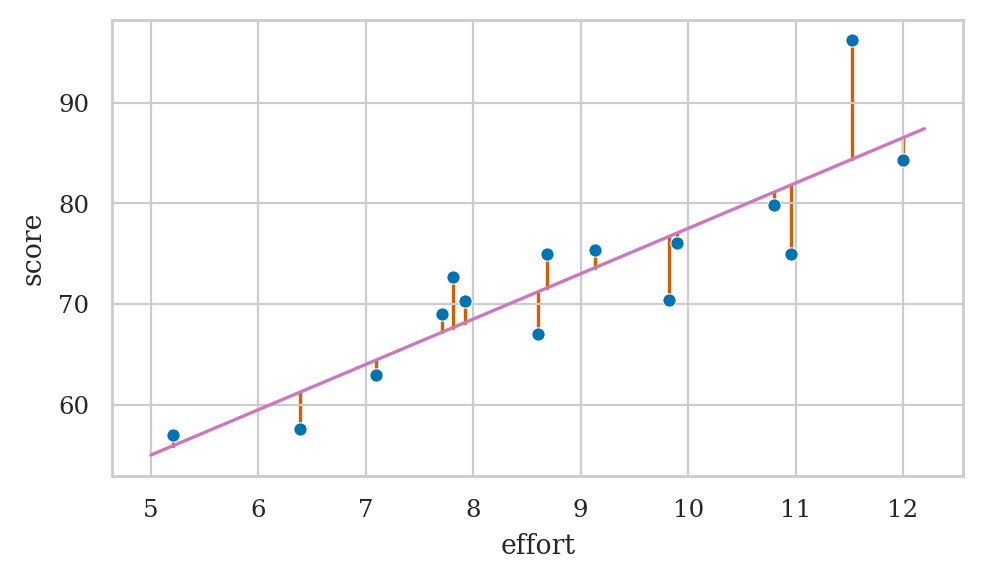
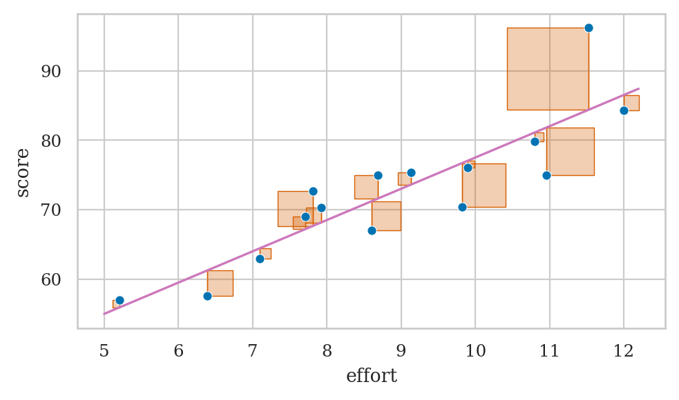
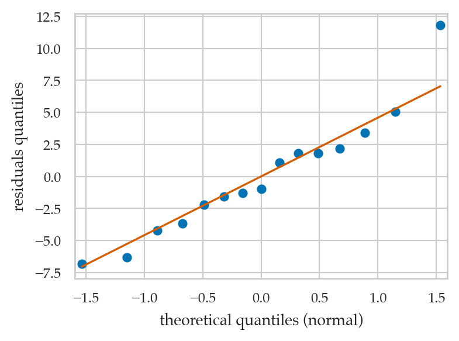
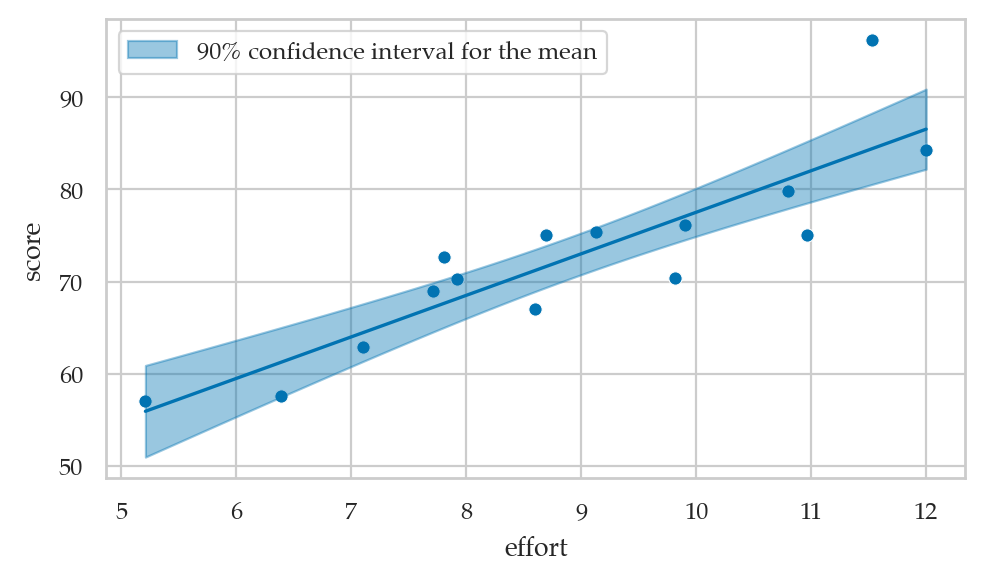
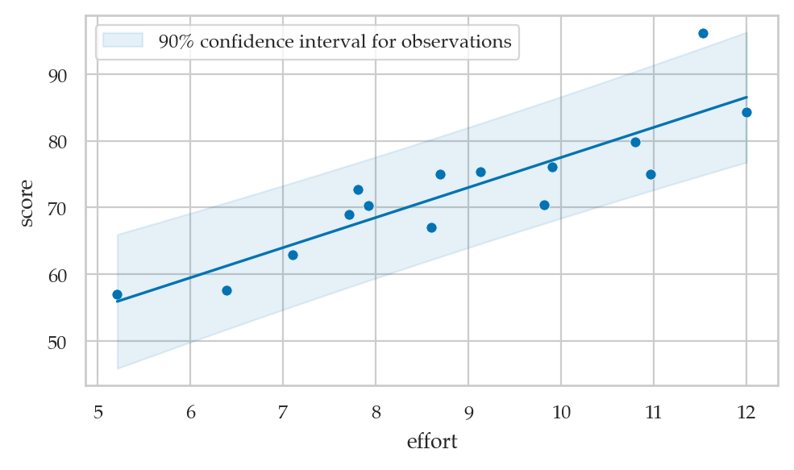
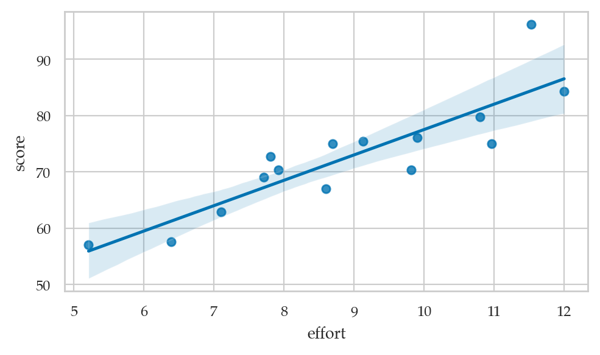
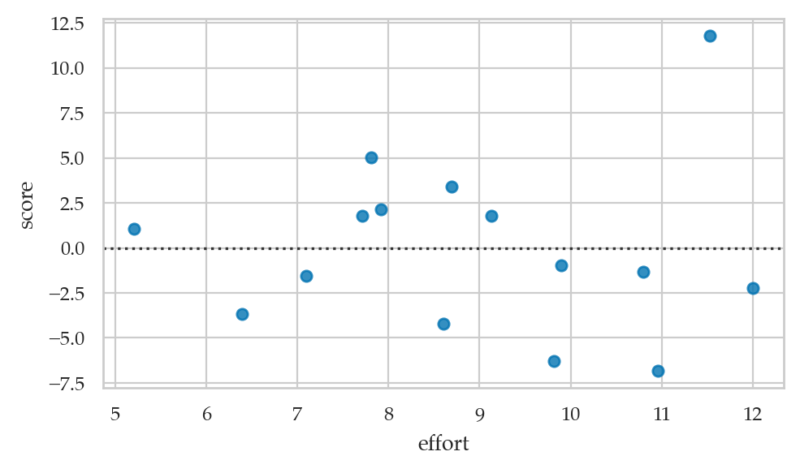

Section 4.1 — Simple linear regression#
This notebook contains the code examples from Section 4.1 Simple linear regression from the No Bullshit Guide to Statistics.
Notebook setup#
# load Python modules
import os
import numpy as np
import pandas as pd
import seaborn as sns
import matplotlib.pyplot as plt
# Figures setup
plt.clf() # needed otherwise `sns.set_theme` doesn"t work
from plot_helpers import RCPARAMS
RCPARAMS.update({"figure.figsize": (5, 3)}) # good for screen
# RCPARAMS.update({"figure.figsize": (5, 1.6)}) # good for print
sns.set_theme(
context="paper",
style="whitegrid",
palette="colorblind",
rc=RCPARAMS,
)
# High-resolution please
%config InlineBackend.figure_format = "retina"
# Where to store figures
DESTDIR = "figures/lm/simple"
<Figure size 640x480 with 0 Axes>
from ministats import plot_residuals
from ministats import plot_residuals2
from ministats.utils import savefigure
# set random seed for repeatability
np.random.seed(42)
import warnings
# silence kurtosistest warning when using n < 20
warnings.filterwarnings("ignore", category=UserWarning)
\(\def\stderr#1{\mathbf{se}_{#1}}\) \(\def\stderrhat#1{\hat{\mathbf{se}}_{#1}}\) \(\newcommand{\Mean}{\textbf{Mean}}\) \(\newcommand{\Var}{\textbf{Var}}\) \(\newcommand{\Std}{\textbf{Std}}\) \(\newcommand{\Freq}{\textbf{Freq}}\) \(\newcommand{\RelFreq}{\textbf{RelFreq}}\) \(\newcommand{\DMeans}{\textbf{DMeans}}\) \(\newcommand{\Prop}{\textbf{Prop}}\) \(\newcommand{\DProps}{\textbf{DProps}}\)
(this cell contains the macro definitions like \(\stderr{\overline{\mathbf{x}}}\), \(\stderrhat{}\), \(\Mean\), …)
Definitions#
Linear model#
from scipy.stats import norm
# Define the linear model function
def linear_model(x):
return 30 + 5 * x
# Define sigma for the normal distribution
sigma = 8
onepixel = 0.02
with sns.axes_style("ticks"):
fig, ax = plt.subplots(figsize=(5, 3))
# Plot the linear model
xs = np.linspace(0, 8, 200)
ys = linear_model(xs)
sns.lineplot(x=xs, y=ys, ax=ax, label=r"$\mu_Y(x) = \beta_0 + \beta_1x$", linewidth=2)
# Plot Gaussian distributions at specified x positions and add sigma lines
x_positions = range(1,8)
for x_pos in x_positions:
y_pos = linear_model(x_pos)
ys = np.linspace(y_pos-3.5*sigma, y_pos+3.5*sigma, 100)
pdf = 0.7*norm(loc=y_pos, scale=sigma).pdf(ys)
ax.fill_betweenx(ys, x_pos - pdf * sigma, x_pos, color="grey", alpha=0.5)
# Draw vertical sigma line and label it on the opposite side of the Gaussian shape
ax.plot([x_pos+onepixel, x_pos+onepixel], [y_pos, y_pos - sigma], "k", lw=1)
ax.text(x_pos + 0.06, y_pos - sigma / 2, r"$\sigma$", fontsize=12, va="center")
# y-intercept
ax.text(0 - 0.15, 30, r"$\beta_0$", fontsize=10, va="center", ha="right")
# Set up x-axis
ax.set_xlim([0, 8])
ax.set_xlabel("$x$")
ax.set_xticklabels([])
# Set up y-axis
ax.set_ylim([0, 100])
ax.set_ylabel("$y$")
ax.set_yticks(range(0,110,10))
ax.set_yticklabels([])
ax.legend(loc="upper left")
filename = os.path.join(DESTDIR, "linear_model_xy_with_gaussians.pdf")
savefigure(fig, filename)
Saved figure to figures/lm/simple/linear_model_xy_with_gaussians.pdf
Saved figure to figures/lm/simple/linear_model_xy_with_gaussians.png
Example: students score as a function of effort#
students = pd.read_csv("../datasets/students.csv")
students.head()
| student_ID | background | curriculum | effort | score | |
|---|---|---|---|---|---|
| 0 | 1 | arts | debate | 10.96 | 75.0 |
| 1 | 2 | science | lecture | 8.69 | 75.0 |
| 2 | 3 | arts | debate | 8.60 | 67.0 |
| 3 | 4 | arts | lecture | 7.92 | 70.3 |
| 4 | 5 | science | debate | 9.90 | 76.1 |
efforts = students["effort"]
scores = students["score"]
sns.scatterplot(x=efforts, y=scores)
filename = os.path.join(DESTDIR, "students_scores_vs_effort_scatterplot.pdf")
savefigure(plt.gcf(), filename)
Saved figure to figures/lm/simple/students_scores_vs_effort_scatterplot.pdf
Saved figure to figures/lm/simple/students_scores_vs_effort_scatterplot.png

Compute the correlation#
np.corrcoef(efforts, scores)[0,1]
# ALT. students[["effort","score"]].corr()
# np.corrcoef
0.8794375135614695
Parameter estimation using least squares#
meaneffort = efforts.mean()
meanscore = scores.mean()
num = np.sum( (efforts-meaneffort)*(scores-meanscore) )
denom = np.sum( (efforts - meaneffort)**2 )
b1 = num / denom
b1
4.504850344209071
b0 = meanscore - b1*meaneffort
b0
32.46580930159963
es = np.linspace(5, 12)
shats = b0 + b1*es
sns.lineplot(x=es, y=shats)
sns.scatterplot(x=efforts, y=scores)
filename = os.path.join(DESTDIR, "students_scores_vs_effort_with_line.pdf")
savefigure(plt.gcf(), filename)
Saved figure to figures/lm/simple/students_scores_vs_effort_with_line.pdf
Saved figure to figures/lm/simple/students_scores_vs_effort_with_line.png
# # ALT.
# sns.regplot(x=efforts, y=scores, ci=None);
Least squares optimization for the parameters#
How do we find the parameter estimates of the model?
plot_residuals(efforts, scores, b0, b1)
sns.scatterplot(x=efforts, y=scores)
es = np.linspace(5, 12.2)
shats = b0 + b1*es
sns.lineplot(x=es, y=shats, color="C4");
filename = os.path.join(DESTDIR, "students_scores_with_residuals.pdf")
savefigure(plt.gcf(), filename)
Saved figure to figures/lm/simple/students_scores_with_residuals.pdf
Saved figure to figures/lm/simple/students_scores_with_residuals.png

ax = sns.scatterplot(x=efforts, y=scores, zorder=4)
es = np.linspace(5, 12.2)
shats = b0 + b1*es
sns.lineplot(x=es, y=shats, color="C4", zorder=5)
plot_residuals2(efforts, scores, b0, b1, ax=ax);
filename = os.path.join(DESTDIR, "students_scores_with_residuals_squared.pdf")
savefigure(plt.gcf(), filename)
Saved figure to figures/lm/simple/students_scores_with_residuals_squared.pdf
Saved figure to figures/lm/simple/students_scores_with_residuals_squared.png

Estimating the standard deviation parameter#
scorehats = b0 + b1*efforts
residuals = scores - scorehats
residuals[0:4]
0 -6.838969
1 3.387041
2 -4.207522
3 2.155776
dtype: float64
SSR = np.sum( residuals**2 )
n = len(students)
sigmahat = np.sqrt( SSR / (n-2) )
sigmahat
4.929598282660258
Model diagnostics#
Residuals plots#
scorehats = b0 + b1*efforts
residuals = scores - scorehats
with plt.rc_context({"text.usetex":True}):
ax = sns.scatterplot(x=efforts, y=residuals, color="red")
ax.set_ylabel("residuals ($r_i = s_i - \\hat{s}_i$)")
ax.axhline(y=0, color="b", linestyle="dashed");
filename = os.path.join(DESTDIR, "residuals_plot_vs_effort.pdf")
savefigure(plt.gcf(), filename)
---------------------------------------------------------------------------
FileNotFoundError Traceback (most recent call last)
File /opt/hostedtoolcache/Python/3.8.18/x64/lib/python3.8/site-packages/matplotlib/texmanager.py:255, in TexManager._run_checked_subprocess(cls, command, tex, cwd)
254 try:
--> 255 report = subprocess.check_output(
256 command, cwd=cwd if cwd is not None else cls.texcache,
257 stderr=subprocess.STDOUT)
258 except FileNotFoundError as exc:
File /opt/hostedtoolcache/Python/3.8.18/x64/lib/python3.8/subprocess.py:415, in check_output(timeout, *popenargs, **kwargs)
413 kwargs['input'] = empty
--> 415 return run(*popenargs, stdout=PIPE, timeout=timeout, check=True,
416 **kwargs).stdout
File /opt/hostedtoolcache/Python/3.8.18/x64/lib/python3.8/subprocess.py:493, in run(input, capture_output, timeout, check, *popenargs, **kwargs)
491 kwargs['stderr'] = PIPE
--> 493 with Popen(*popenargs, **kwargs) as process:
494 try:
File /opt/hostedtoolcache/Python/3.8.18/x64/lib/python3.8/subprocess.py:858, in Popen.__init__(self, args, bufsize, executable, stdin, stdout, stderr, preexec_fn, close_fds, shell, cwd, env, universal_newlines, startupinfo, creationflags, restore_signals, start_new_session, pass_fds, encoding, errors, text)
855 self.stderr = io.TextIOWrapper(self.stderr,
856 encoding=encoding, errors=errors)
--> 858 self._execute_child(args, executable, preexec_fn, close_fds,
859 pass_fds, cwd, env,
860 startupinfo, creationflags, shell,
861 p2cread, p2cwrite,
862 c2pread, c2pwrite,
863 errread, errwrite,
864 restore_signals, start_new_session)
865 except:
866 # Cleanup if the child failed starting.
File /opt/hostedtoolcache/Python/3.8.18/x64/lib/python3.8/subprocess.py:1720, in Popen._execute_child(self, args, executable, preexec_fn, close_fds, pass_fds, cwd, env, startupinfo, creationflags, shell, p2cread, p2cwrite, c2pread, c2pwrite, errread, errwrite, restore_signals, start_new_session)
1719 err_msg = os.strerror(errno_num)
-> 1720 raise child_exception_type(errno_num, err_msg, err_filename)
1721 raise child_exception_type(err_msg)
FileNotFoundError: [Errno 2] No such file or directory: 'latex'
The above exception was the direct cause of the following exception:
RuntimeError Traceback (most recent call last)
Cell In[19], line 7
4 ax.axhline(y=0, color="b", linestyle="dashed");
6 filename = os.path.join(DESTDIR, "residuals_plot_vs_effort.pdf")
----> 7 savefigure(plt.gcf(), filename)
File /opt/hostedtoolcache/Python/3.8.18/x64/lib/python3.8/site-packages/ministats/utils.py:63, in savefigure(obj, filename, tight_layout_kwargs)
61 fig.tight_layout(**tight_layout_kwargs)
62 else:
---> 63 fig.tight_layout()
65 # save as PDF
66 fig.savefig(filename, dpi=300, bbox_inches="tight", pad_inches=0)
File /opt/hostedtoolcache/Python/3.8.18/x64/lib/python3.8/site-packages/matplotlib/figure.py:3543, in Figure.tight_layout(self, pad, h_pad, w_pad, rect)
3541 previous_engine = self.get_layout_engine()
3542 self.set_layout_engine(engine)
-> 3543 engine.execute(self)
3544 if previous_engine is not None and not isinstance(
3545 previous_engine, (TightLayoutEngine, PlaceHolderLayoutEngine)
3546 ):
3547 _api.warn_external('The figure layout has changed to tight')
File /opt/hostedtoolcache/Python/3.8.18/x64/lib/python3.8/site-packages/matplotlib/layout_engine.py:184, in TightLayoutEngine.execute(self, fig)
182 renderer = fig._get_renderer()
183 with getattr(renderer, "_draw_disabled", nullcontext)():
--> 184 kwargs = get_tight_layout_figure(
185 fig, fig.axes, get_subplotspec_list(fig.axes), renderer,
186 pad=info['pad'], h_pad=info['h_pad'], w_pad=info['w_pad'],
187 rect=info['rect'])
188 if kwargs:
189 fig.subplots_adjust(**kwargs)
File /opt/hostedtoolcache/Python/3.8.18/x64/lib/python3.8/site-packages/matplotlib/_tight_layout.py:266, in get_tight_layout_figure(fig, axes_list, subplotspec_list, renderer, pad, h_pad, w_pad, rect)
261 return {}
262 span_pairs.append((
263 slice(ss.rowspan.start * div_row, ss.rowspan.stop * div_row),
264 slice(ss.colspan.start * div_col, ss.colspan.stop * div_col)))
--> 266 kwargs = _auto_adjust_subplotpars(fig, renderer,
267 shape=(max_nrows, max_ncols),
268 span_pairs=span_pairs,
269 subplot_list=subplot_list,
270 ax_bbox_list=ax_bbox_list,
271 pad=pad, h_pad=h_pad, w_pad=w_pad)
273 # kwargs can be none if tight_layout fails...
274 if rect is not None and kwargs is not None:
275 # if rect is given, the whole subplots area (including
276 # labels) will fit into the rect instead of the
(...)
280 # auto_adjust_subplotpars twice, where the second run
281 # with adjusted rect parameters.
File /opt/hostedtoolcache/Python/3.8.18/x64/lib/python3.8/site-packages/matplotlib/_tight_layout.py:82, in _auto_adjust_subplotpars(fig, renderer, shape, span_pairs, subplot_list, ax_bbox_list, pad, h_pad, w_pad, rect)
80 for ax in subplots:
81 if ax.get_visible():
---> 82 bb += [martist._get_tightbbox_for_layout_only(ax, renderer)]
84 tight_bbox_raw = Bbox.union(bb)
85 tight_bbox = fig.transFigure.inverted().transform_bbox(tight_bbox_raw)
File /opt/hostedtoolcache/Python/3.8.18/x64/lib/python3.8/site-packages/matplotlib/artist.py:1415, in _get_tightbbox_for_layout_only(obj, *args, **kwargs)
1409 """
1410 Matplotlib's `.Axes.get_tightbbox` and `.Axis.get_tightbbox` support a
1411 *for_layout_only* kwarg; this helper tries to use the kwarg but skips it
1412 when encountering third-party subclasses that do not support it.
1413 """
1414 try:
-> 1415 return obj.get_tightbbox(*args, **{**kwargs, "for_layout_only": True})
1416 except TypeError:
1417 return obj.get_tightbbox(*args, **kwargs)
File /opt/hostedtoolcache/Python/3.8.18/x64/lib/python3.8/site-packages/matplotlib/axes/_base.py:4387, in _AxesBase.get_tightbbox(self, renderer, call_axes_locator, bbox_extra_artists, for_layout_only)
4385 for axis in self._axis_map.values():
4386 if self.axison and axis.get_visible():
-> 4387 ba = martist._get_tightbbox_for_layout_only(axis, renderer)
4388 if ba:
4389 bb.append(ba)
File /opt/hostedtoolcache/Python/3.8.18/x64/lib/python3.8/site-packages/matplotlib/artist.py:1415, in _get_tightbbox_for_layout_only(obj, *args, **kwargs)
1409 """
1410 Matplotlib's `.Axes.get_tightbbox` and `.Axis.get_tightbbox` support a
1411 *for_layout_only* kwarg; this helper tries to use the kwarg but skips it
1412 when encountering third-party subclasses that do not support it.
1413 """
1414 try:
-> 1415 return obj.get_tightbbox(*args, **{**kwargs, "for_layout_only": True})
1416 except TypeError:
1417 return obj.get_tightbbox(*args, **kwargs)
File /opt/hostedtoolcache/Python/3.8.18/x64/lib/python3.8/site-packages/matplotlib/axis.py:1337, in Axis.get_tightbbox(self, renderer, for_layout_only)
1334 renderer = self.figure._get_renderer()
1335 ticks_to_draw = self._update_ticks()
-> 1337 self._update_label_position(renderer)
1339 # go back to just this axis's tick labels
1340 tlb1, tlb2 = self._get_ticklabel_bboxes(ticks_to_draw, renderer)
File /opt/hostedtoolcache/Python/3.8.18/x64/lib/python3.8/site-packages/matplotlib/axis.py:2353, in XAxis._update_label_position(self, renderer)
2349 return
2351 # get bounding boxes for this axis and any siblings
2352 # that have been set by `fig.align_xlabels()`
-> 2353 bboxes, bboxes2 = self._get_tick_boxes_siblings(renderer=renderer)
2355 x, y = self.label.get_position()
2356 if self.label_position == 'bottom':
File /opt/hostedtoolcache/Python/3.8.18/x64/lib/python3.8/site-packages/matplotlib/axis.py:2149, in Axis._get_tick_boxes_siblings(self, renderer)
2147 axis = getattr(ax, f"{axis_name}axis")
2148 ticks_to_draw = axis._update_ticks()
-> 2149 tlb, tlb2 = axis._get_ticklabel_bboxes(ticks_to_draw, renderer)
2150 bboxes.extend(tlb)
2151 bboxes2.extend(tlb2)
File /opt/hostedtoolcache/Python/3.8.18/x64/lib/python3.8/site-packages/matplotlib/axis.py:1316, in Axis._get_ticklabel_bboxes(self, ticks, renderer)
1314 if renderer is None:
1315 renderer = self.figure._get_renderer()
-> 1316 return ([tick.label1.get_window_extent(renderer)
1317 for tick in ticks if tick.label1.get_visible()],
1318 [tick.label2.get_window_extent(renderer)
1319 for tick in ticks if tick.label2.get_visible()])
File /opt/hostedtoolcache/Python/3.8.18/x64/lib/python3.8/site-packages/matplotlib/axis.py:1316, in <listcomp>(.0)
1314 if renderer is None:
1315 renderer = self.figure._get_renderer()
-> 1316 return ([tick.label1.get_window_extent(renderer)
1317 for tick in ticks if tick.label1.get_visible()],
1318 [tick.label2.get_window_extent(renderer)
1319 for tick in ticks if tick.label2.get_visible()])
File /opt/hostedtoolcache/Python/3.8.18/x64/lib/python3.8/site-packages/matplotlib/text.py:959, in Text.get_window_extent(self, renderer, dpi)
954 raise RuntimeError(
955 "Cannot get window extent of text w/o renderer. You likely "
956 "want to call 'figure.draw_without_rendering()' first.")
958 with cbook._setattr_cm(self.figure, dpi=dpi):
--> 959 bbox, info, descent = self._get_layout(self._renderer)
960 x, y = self.get_unitless_position()
961 x, y = self.get_transform().transform((x, y))
File /opt/hostedtoolcache/Python/3.8.18/x64/lib/python3.8/site-packages/matplotlib/text.py:378, in Text._get_layout(self, renderer)
375 ys = []
377 # Full vertical extent of font, including ascenders and descenders:
--> 378 _, lp_h, lp_d = _get_text_metrics_with_cache(
379 renderer, "lp", self._fontproperties,
380 ismath="TeX" if self.get_usetex() else False, dpi=self.figure.dpi)
381 min_dy = (lp_h - lp_d) * self._linespacing
383 for i, line in enumerate(lines):
File /opt/hostedtoolcache/Python/3.8.18/x64/lib/python3.8/site-packages/matplotlib/text.py:97, in _get_text_metrics_with_cache(renderer, text, fontprop, ismath, dpi)
94 """Call ``renderer.get_text_width_height_descent``, caching the results."""
95 # Cached based on a copy of fontprop so that later in-place mutations of
96 # the passed-in argument do not mess up the cache.
---> 97 return _get_text_metrics_with_cache_impl(
98 weakref.ref(renderer), text, fontprop.copy(), ismath, dpi)
File /opt/hostedtoolcache/Python/3.8.18/x64/lib/python3.8/site-packages/matplotlib/text.py:105, in _get_text_metrics_with_cache_impl(renderer_ref, text, fontprop, ismath, dpi)
101 @functools.lru_cache(4096)
102 def _get_text_metrics_with_cache_impl(
103 renderer_ref, text, fontprop, ismath, dpi):
104 # dpi is unused, but participates in cache invalidation (via the renderer).
--> 105 return renderer_ref().get_text_width_height_descent(text, fontprop, ismath)
File /opt/hostedtoolcache/Python/3.8.18/x64/lib/python3.8/site-packages/matplotlib/backends/backend_agg.py:226, in RendererAgg.get_text_width_height_descent(self, s, prop, ismath)
224 _api.check_in_list(["TeX", True, False], ismath=ismath)
225 if ismath == "TeX":
--> 226 return super().get_text_width_height_descent(s, prop, ismath)
228 if ismath:
229 ox, oy, width, height, descent, font_image = \
230 self.mathtext_parser.parse(s, self.dpi, prop)
File /opt/hostedtoolcache/Python/3.8.18/x64/lib/python3.8/site-packages/matplotlib/backend_bases.py:645, in RendererBase.get_text_width_height_descent(self, s, prop, ismath)
641 fontsize = prop.get_size_in_points()
643 if ismath == 'TeX':
644 # todo: handle properties
--> 645 return self.get_texmanager().get_text_width_height_descent(
646 s, fontsize, renderer=self)
648 dpi = self.points_to_pixels(72)
649 if ismath:
File /opt/hostedtoolcache/Python/3.8.18/x64/lib/python3.8/site-packages/matplotlib/texmanager.py:368, in TexManager.get_text_width_height_descent(cls, tex, fontsize, renderer)
366 if tex.strip() == '':
367 return 0, 0, 0
--> 368 dvifile = cls.make_dvi(tex, fontsize)
369 dpi_fraction = renderer.points_to_pixels(1.) if renderer else 1
370 with dviread.Dvi(dvifile, 72 * dpi_fraction) as dvi:
File /opt/hostedtoolcache/Python/3.8.18/x64/lib/python3.8/site-packages/matplotlib/texmanager.py:300, in TexManager.make_dvi(cls, tex, fontsize)
298 with TemporaryDirectory(dir=cwd) as tmpdir:
299 tmppath = Path(tmpdir)
--> 300 cls._run_checked_subprocess(
301 ["latex", "-interaction=nonstopmode", "--halt-on-error",
302 f"--output-directory={tmppath.name}",
303 f"{texfile.name}"], tex, cwd=cwd)
304 (tmppath / Path(dvifile).name).replace(dvifile)
305 return dvifile
File /opt/hostedtoolcache/Python/3.8.18/x64/lib/python3.8/site-packages/matplotlib/texmanager.py:259, in TexManager._run_checked_subprocess(cls, command, tex, cwd)
255 report = subprocess.check_output(
256 command, cwd=cwd if cwd is not None else cls.texcache,
257 stderr=subprocess.STDOUT)
258 except FileNotFoundError as exc:
--> 259 raise RuntimeError(
260 'Failed to process string with tex because {} could not be '
261 'found'.format(command[0])) from exc
262 except subprocess.CalledProcessError as exc:
263 raise RuntimeError(
264 '{prog} was not able to process the following string:\n'
265 '{tex!r}\n\n'
(...)
272 exc=exc.output.decode('utf-8', 'backslashreplace'))
273 ) from None
RuntimeError: Failed to process string with tex because latex could not be found
Error in callback <function _draw_all_if_interactive at 0x7f6e3cd74af0> (for post_execute):
---------------------------------------------------------------------------
FileNotFoundError Traceback (most recent call last)
File /opt/hostedtoolcache/Python/3.8.18/x64/lib/python3.8/site-packages/matplotlib/texmanager.py:255, in TexManager._run_checked_subprocess(cls, command, tex, cwd)
254 try:
--> 255 report = subprocess.check_output(
256 command, cwd=cwd if cwd is not None else cls.texcache,
257 stderr=subprocess.STDOUT)
258 except FileNotFoundError as exc:
File /opt/hostedtoolcache/Python/3.8.18/x64/lib/python3.8/subprocess.py:415, in check_output(timeout, *popenargs, **kwargs)
413 kwargs['input'] = empty
--> 415 return run(*popenargs, stdout=PIPE, timeout=timeout, check=True,
416 **kwargs).stdout
File /opt/hostedtoolcache/Python/3.8.18/x64/lib/python3.8/subprocess.py:493, in run(input, capture_output, timeout, check, *popenargs, **kwargs)
491 kwargs['stderr'] = PIPE
--> 493 with Popen(*popenargs, **kwargs) as process:
494 try:
File /opt/hostedtoolcache/Python/3.8.18/x64/lib/python3.8/subprocess.py:858, in Popen.__init__(self, args, bufsize, executable, stdin, stdout, stderr, preexec_fn, close_fds, shell, cwd, env, universal_newlines, startupinfo, creationflags, restore_signals, start_new_session, pass_fds, encoding, errors, text)
855 self.stderr = io.TextIOWrapper(self.stderr,
856 encoding=encoding, errors=errors)
--> 858 self._execute_child(args, executable, preexec_fn, close_fds,
859 pass_fds, cwd, env,
860 startupinfo, creationflags, shell,
861 p2cread, p2cwrite,
862 c2pread, c2pwrite,
863 errread, errwrite,
864 restore_signals, start_new_session)
865 except:
866 # Cleanup if the child failed starting.
File /opt/hostedtoolcache/Python/3.8.18/x64/lib/python3.8/subprocess.py:1720, in Popen._execute_child(self, args, executable, preexec_fn, close_fds, pass_fds, cwd, env, startupinfo, creationflags, shell, p2cread, p2cwrite, c2pread, c2pwrite, errread, errwrite, restore_signals, start_new_session)
1719 err_msg = os.strerror(errno_num)
-> 1720 raise child_exception_type(errno_num, err_msg, err_filename)
1721 raise child_exception_type(err_msg)
FileNotFoundError: [Errno 2] No such file or directory: 'latex'
The above exception was the direct cause of the following exception:
RuntimeError Traceback (most recent call last)
File /opt/hostedtoolcache/Python/3.8.18/x64/lib/python3.8/site-packages/matplotlib/pyplot.py:120, in _draw_all_if_interactive()
118 def _draw_all_if_interactive():
119 if matplotlib.is_interactive():
--> 120 draw_all()
File /opt/hostedtoolcache/Python/3.8.18/x64/lib/python3.8/site-packages/matplotlib/_pylab_helpers.py:132, in Gcf.draw_all(cls, force)
130 for manager in cls.get_all_fig_managers():
131 if force or manager.canvas.figure.stale:
--> 132 manager.canvas.draw_idle()
File /opt/hostedtoolcache/Python/3.8.18/x64/lib/python3.8/site-packages/matplotlib/backend_bases.py:2082, in FigureCanvasBase.draw_idle(self, *args, **kwargs)
2080 if not self._is_idle_drawing:
2081 with self._idle_draw_cntx():
-> 2082 self.draw(*args, **kwargs)
File /opt/hostedtoolcache/Python/3.8.18/x64/lib/python3.8/site-packages/matplotlib/backends/backend_agg.py:400, in FigureCanvasAgg.draw(self)
396 # Acquire a lock on the shared font cache.
397 with RendererAgg.lock, \
398 (self.toolbar._wait_cursor_for_draw_cm() if self.toolbar
399 else nullcontext()):
--> 400 self.figure.draw(self.renderer)
401 # A GUI class may be need to update a window using this draw, so
402 # don't forget to call the superclass.
403 super().draw()
File /opt/hostedtoolcache/Python/3.8.18/x64/lib/python3.8/site-packages/matplotlib/artist.py:95, in _finalize_rasterization.<locals>.draw_wrapper(artist, renderer, *args, **kwargs)
93 @wraps(draw)
94 def draw_wrapper(artist, renderer, *args, **kwargs):
---> 95 result = draw(artist, renderer, *args, **kwargs)
96 if renderer._rasterizing:
97 renderer.stop_rasterizing()
File /opt/hostedtoolcache/Python/3.8.18/x64/lib/python3.8/site-packages/matplotlib/artist.py:72, in allow_rasterization.<locals>.draw_wrapper(artist, renderer)
69 if artist.get_agg_filter() is not None:
70 renderer.start_filter()
---> 72 return draw(artist, renderer)
73 finally:
74 if artist.get_agg_filter() is not None:
File /opt/hostedtoolcache/Python/3.8.18/x64/lib/python3.8/site-packages/matplotlib/figure.py:3175, in Figure.draw(self, renderer)
3172 # ValueError can occur when resizing a window.
3174 self.patch.draw(renderer)
-> 3175 mimage._draw_list_compositing_images(
3176 renderer, self, artists, self.suppressComposite)
3178 for sfig in self.subfigs:
3179 sfig.draw(renderer)
File /opt/hostedtoolcache/Python/3.8.18/x64/lib/python3.8/site-packages/matplotlib/image.py:131, in _draw_list_compositing_images(renderer, parent, artists, suppress_composite)
129 if not_composite or not has_images:
130 for a in artists:
--> 131 a.draw(renderer)
132 else:
133 # Composite any adjacent images together
134 image_group = []
File /opt/hostedtoolcache/Python/3.8.18/x64/lib/python3.8/site-packages/matplotlib/artist.py:72, in allow_rasterization.<locals>.draw_wrapper(artist, renderer)
69 if artist.get_agg_filter() is not None:
70 renderer.start_filter()
---> 72 return draw(artist, renderer)
73 finally:
74 if artist.get_agg_filter() is not None:
File /opt/hostedtoolcache/Python/3.8.18/x64/lib/python3.8/site-packages/matplotlib/axes/_base.py:3028, in _AxesBase.draw(self, renderer)
3025 for spine in self.spines.values():
3026 artists.remove(spine)
-> 3028 self._update_title_position(renderer)
3030 if not self.axison:
3031 for _axis in self._axis_map.values():
File /opt/hostedtoolcache/Python/3.8.18/x64/lib/python3.8/site-packages/matplotlib/axes/_base.py:2963, in _AxesBase._update_title_position(self, renderer)
2960 bb = None
2961 if (ax.xaxis.get_ticks_position() in ['top', 'unknown']
2962 or ax.xaxis.get_label_position() == 'top'):
-> 2963 bb = ax.xaxis.get_tightbbox(renderer)
2964 if bb is None:
2965 if 'outline' in ax.spines:
2966 # Special case for colorbars:
File /opt/hostedtoolcache/Python/3.8.18/x64/lib/python3.8/site-packages/matplotlib/axis.py:1337, in Axis.get_tightbbox(self, renderer, for_layout_only)
1334 renderer = self.figure._get_renderer()
1335 ticks_to_draw = self._update_ticks()
-> 1337 self._update_label_position(renderer)
1339 # go back to just this axis's tick labels
1340 tlb1, tlb2 = self._get_ticklabel_bboxes(ticks_to_draw, renderer)
File /opt/hostedtoolcache/Python/3.8.18/x64/lib/python3.8/site-packages/matplotlib/axis.py:2353, in XAxis._update_label_position(self, renderer)
2349 return
2351 # get bounding boxes for this axis and any siblings
2352 # that have been set by `fig.align_xlabels()`
-> 2353 bboxes, bboxes2 = self._get_tick_boxes_siblings(renderer=renderer)
2355 x, y = self.label.get_position()
2356 if self.label_position == 'bottom':
File /opt/hostedtoolcache/Python/3.8.18/x64/lib/python3.8/site-packages/matplotlib/axis.py:2149, in Axis._get_tick_boxes_siblings(self, renderer)
2147 axis = getattr(ax, f"{axis_name}axis")
2148 ticks_to_draw = axis._update_ticks()
-> 2149 tlb, tlb2 = axis._get_ticklabel_bboxes(ticks_to_draw, renderer)
2150 bboxes.extend(tlb)
2151 bboxes2.extend(tlb2)
File /opt/hostedtoolcache/Python/3.8.18/x64/lib/python3.8/site-packages/matplotlib/axis.py:1316, in Axis._get_ticklabel_bboxes(self, ticks, renderer)
1314 if renderer is None:
1315 renderer = self.figure._get_renderer()
-> 1316 return ([tick.label1.get_window_extent(renderer)
1317 for tick in ticks if tick.label1.get_visible()],
1318 [tick.label2.get_window_extent(renderer)
1319 for tick in ticks if tick.label2.get_visible()])
File /opt/hostedtoolcache/Python/3.8.18/x64/lib/python3.8/site-packages/matplotlib/axis.py:1316, in <listcomp>(.0)
1314 if renderer is None:
1315 renderer = self.figure._get_renderer()
-> 1316 return ([tick.label1.get_window_extent(renderer)
1317 for tick in ticks if tick.label1.get_visible()],
1318 [tick.label2.get_window_extent(renderer)
1319 for tick in ticks if tick.label2.get_visible()])
File /opt/hostedtoolcache/Python/3.8.18/x64/lib/python3.8/site-packages/matplotlib/text.py:959, in Text.get_window_extent(self, renderer, dpi)
954 raise RuntimeError(
955 "Cannot get window extent of text w/o renderer. You likely "
956 "want to call 'figure.draw_without_rendering()' first.")
958 with cbook._setattr_cm(self.figure, dpi=dpi):
--> 959 bbox, info, descent = self._get_layout(self._renderer)
960 x, y = self.get_unitless_position()
961 x, y = self.get_transform().transform((x, y))
File /opt/hostedtoolcache/Python/3.8.18/x64/lib/python3.8/site-packages/matplotlib/text.py:378, in Text._get_layout(self, renderer)
375 ys = []
377 # Full vertical extent of font, including ascenders and descenders:
--> 378 _, lp_h, lp_d = _get_text_metrics_with_cache(
379 renderer, "lp", self._fontproperties,
380 ismath="TeX" if self.get_usetex() else False, dpi=self.figure.dpi)
381 min_dy = (lp_h - lp_d) * self._linespacing
383 for i, line in enumerate(lines):
File /opt/hostedtoolcache/Python/3.8.18/x64/lib/python3.8/site-packages/matplotlib/text.py:97, in _get_text_metrics_with_cache(renderer, text, fontprop, ismath, dpi)
94 """Call ``renderer.get_text_width_height_descent``, caching the results."""
95 # Cached based on a copy of fontprop so that later in-place mutations of
96 # the passed-in argument do not mess up the cache.
---> 97 return _get_text_metrics_with_cache_impl(
98 weakref.ref(renderer), text, fontprop.copy(), ismath, dpi)
File /opt/hostedtoolcache/Python/3.8.18/x64/lib/python3.8/site-packages/matplotlib/text.py:105, in _get_text_metrics_with_cache_impl(renderer_ref, text, fontprop, ismath, dpi)
101 @functools.lru_cache(4096)
102 def _get_text_metrics_with_cache_impl(
103 renderer_ref, text, fontprop, ismath, dpi):
104 # dpi is unused, but participates in cache invalidation (via the renderer).
--> 105 return renderer_ref().get_text_width_height_descent(text, fontprop, ismath)
File /opt/hostedtoolcache/Python/3.8.18/x64/lib/python3.8/site-packages/matplotlib/backends/backend_agg.py:226, in RendererAgg.get_text_width_height_descent(self, s, prop, ismath)
224 _api.check_in_list(["TeX", True, False], ismath=ismath)
225 if ismath == "TeX":
--> 226 return super().get_text_width_height_descent(s, prop, ismath)
228 if ismath:
229 ox, oy, width, height, descent, font_image = \
230 self.mathtext_parser.parse(s, self.dpi, prop)
File /opt/hostedtoolcache/Python/3.8.18/x64/lib/python3.8/site-packages/matplotlib/backend_bases.py:645, in RendererBase.get_text_width_height_descent(self, s, prop, ismath)
641 fontsize = prop.get_size_in_points()
643 if ismath == 'TeX':
644 # todo: handle properties
--> 645 return self.get_texmanager().get_text_width_height_descent(
646 s, fontsize, renderer=self)
648 dpi = self.points_to_pixels(72)
649 if ismath:
File /opt/hostedtoolcache/Python/3.8.18/x64/lib/python3.8/site-packages/matplotlib/texmanager.py:368, in TexManager.get_text_width_height_descent(cls, tex, fontsize, renderer)
366 if tex.strip() == '':
367 return 0, 0, 0
--> 368 dvifile = cls.make_dvi(tex, fontsize)
369 dpi_fraction = renderer.points_to_pixels(1.) if renderer else 1
370 with dviread.Dvi(dvifile, 72 * dpi_fraction) as dvi:
File /opt/hostedtoolcache/Python/3.8.18/x64/lib/python3.8/site-packages/matplotlib/texmanager.py:300, in TexManager.make_dvi(cls, tex, fontsize)
298 with TemporaryDirectory(dir=cwd) as tmpdir:
299 tmppath = Path(tmpdir)
--> 300 cls._run_checked_subprocess(
301 ["latex", "-interaction=nonstopmode", "--halt-on-error",
302 f"--output-directory={tmppath.name}",
303 f"{texfile.name}"], tex, cwd=cwd)
304 (tmppath / Path(dvifile).name).replace(dvifile)
305 return dvifile
File /opt/hostedtoolcache/Python/3.8.18/x64/lib/python3.8/site-packages/matplotlib/texmanager.py:259, in TexManager._run_checked_subprocess(cls, command, tex, cwd)
255 report = subprocess.check_output(
256 command, cwd=cwd if cwd is not None else cls.texcache,
257 stderr=subprocess.STDOUT)
258 except FileNotFoundError as exc:
--> 259 raise RuntimeError(
260 'Failed to process string with tex because {} could not be '
261 'found'.format(command[0])) from exc
262 except subprocess.CalledProcessError as exc:
263 raise RuntimeError(
264 '{prog} was not able to process the following string:\n'
265 '{tex!r}\n\n'
(...)
272 exc=exc.output.decode('utf-8', 'backslashreplace'))
273 ) from None
RuntimeError: Failed to process string with tex because latex could not be found
---------------------------------------------------------------------------
FileNotFoundError Traceback (most recent call last)
File /opt/hostedtoolcache/Python/3.8.18/x64/lib/python3.8/site-packages/matplotlib/texmanager.py:255, in TexManager._run_checked_subprocess(cls, command, tex, cwd)
254 try:
--> 255 report = subprocess.check_output(
256 command, cwd=cwd if cwd is not None else cls.texcache,
257 stderr=subprocess.STDOUT)
258 except FileNotFoundError as exc:
File /opt/hostedtoolcache/Python/3.8.18/x64/lib/python3.8/subprocess.py:415, in check_output(timeout, *popenargs, **kwargs)
413 kwargs['input'] = empty
--> 415 return run(*popenargs, stdout=PIPE, timeout=timeout, check=True,
416 **kwargs).stdout
File /opt/hostedtoolcache/Python/3.8.18/x64/lib/python3.8/subprocess.py:493, in run(input, capture_output, timeout, check, *popenargs, **kwargs)
491 kwargs['stderr'] = PIPE
--> 493 with Popen(*popenargs, **kwargs) as process:
494 try:
File /opt/hostedtoolcache/Python/3.8.18/x64/lib/python3.8/subprocess.py:858, in Popen.__init__(self, args, bufsize, executable, stdin, stdout, stderr, preexec_fn, close_fds, shell, cwd, env, universal_newlines, startupinfo, creationflags, restore_signals, start_new_session, pass_fds, encoding, errors, text)
855 self.stderr = io.TextIOWrapper(self.stderr,
856 encoding=encoding, errors=errors)
--> 858 self._execute_child(args, executable, preexec_fn, close_fds,
859 pass_fds, cwd, env,
860 startupinfo, creationflags, shell,
861 p2cread, p2cwrite,
862 c2pread, c2pwrite,
863 errread, errwrite,
864 restore_signals, start_new_session)
865 except:
866 # Cleanup if the child failed starting.
File /opt/hostedtoolcache/Python/3.8.18/x64/lib/python3.8/subprocess.py:1720, in Popen._execute_child(self, args, executable, preexec_fn, close_fds, pass_fds, cwd, env, startupinfo, creationflags, shell, p2cread, p2cwrite, c2pread, c2pwrite, errread, errwrite, restore_signals, start_new_session)
1719 err_msg = os.strerror(errno_num)
-> 1720 raise child_exception_type(errno_num, err_msg, err_filename)
1721 raise child_exception_type(err_msg)
FileNotFoundError: [Errno 2] No such file or directory: 'latex'
The above exception was the direct cause of the following exception:
RuntimeError Traceback (most recent call last)
File /opt/hostedtoolcache/Python/3.8.18/x64/lib/python3.8/site-packages/IPython/core/formatters.py:340, in BaseFormatter.__call__(self, obj)
338 pass
339 else:
--> 340 return printer(obj)
341 # Finally look for special method names
342 method = get_real_method(obj, self.print_method)
File /opt/hostedtoolcache/Python/3.8.18/x64/lib/python3.8/site-packages/IPython/core/pylabtools.py:169, in retina_figure(fig, base64, **kwargs)
160 def retina_figure(fig, base64=False, **kwargs):
161 """format a figure as a pixel-doubled (retina) PNG
162
163 If `base64` is True, return base64-encoded str instead of raw bytes
(...)
167 base64 argument
168 """
--> 169 pngdata = print_figure(fig, fmt="retina", base64=False, **kwargs)
170 # Make sure that retina_figure acts just like print_figure and returns
171 # None when the figure is empty.
172 if pngdata is None:
File /opt/hostedtoolcache/Python/3.8.18/x64/lib/python3.8/site-packages/IPython/core/pylabtools.py:152, in print_figure(fig, fmt, bbox_inches, base64, **kwargs)
149 from matplotlib.backend_bases import FigureCanvasBase
150 FigureCanvasBase(fig)
--> 152 fig.canvas.print_figure(bytes_io, **kw)
153 data = bytes_io.getvalue()
154 if fmt == 'svg':
File /opt/hostedtoolcache/Python/3.8.18/x64/lib/python3.8/site-packages/matplotlib/backend_bases.py:2342, in FigureCanvasBase.print_figure(self, filename, dpi, facecolor, edgecolor, orientation, format, bbox_inches, pad_inches, bbox_extra_artists, backend, **kwargs)
2336 renderer = _get_renderer(
2337 self.figure,
2338 functools.partial(
2339 print_method, orientation=orientation)
2340 )
2341 with getattr(renderer, "_draw_disabled", nullcontext)():
-> 2342 self.figure.draw(renderer)
2344 if bbox_inches:
2345 if bbox_inches == "tight":
File /opt/hostedtoolcache/Python/3.8.18/x64/lib/python3.8/site-packages/matplotlib/artist.py:95, in _finalize_rasterization.<locals>.draw_wrapper(artist, renderer, *args, **kwargs)
93 @wraps(draw)
94 def draw_wrapper(artist, renderer, *args, **kwargs):
---> 95 result = draw(artist, renderer, *args, **kwargs)
96 if renderer._rasterizing:
97 renderer.stop_rasterizing()
File /opt/hostedtoolcache/Python/3.8.18/x64/lib/python3.8/site-packages/matplotlib/artist.py:72, in allow_rasterization.<locals>.draw_wrapper(artist, renderer)
69 if artist.get_agg_filter() is not None:
70 renderer.start_filter()
---> 72 return draw(artist, renderer)
73 finally:
74 if artist.get_agg_filter() is not None:
File /opt/hostedtoolcache/Python/3.8.18/x64/lib/python3.8/site-packages/matplotlib/figure.py:3175, in Figure.draw(self, renderer)
3172 # ValueError can occur when resizing a window.
3174 self.patch.draw(renderer)
-> 3175 mimage._draw_list_compositing_images(
3176 renderer, self, artists, self.suppressComposite)
3178 for sfig in self.subfigs:
3179 sfig.draw(renderer)
File /opt/hostedtoolcache/Python/3.8.18/x64/lib/python3.8/site-packages/matplotlib/image.py:131, in _draw_list_compositing_images(renderer, parent, artists, suppress_composite)
129 if not_composite or not has_images:
130 for a in artists:
--> 131 a.draw(renderer)
132 else:
133 # Composite any adjacent images together
134 image_group = []
File /opt/hostedtoolcache/Python/3.8.18/x64/lib/python3.8/site-packages/matplotlib/artist.py:72, in allow_rasterization.<locals>.draw_wrapper(artist, renderer)
69 if artist.get_agg_filter() is not None:
70 renderer.start_filter()
---> 72 return draw(artist, renderer)
73 finally:
74 if artist.get_agg_filter() is not None:
File /opt/hostedtoolcache/Python/3.8.18/x64/lib/python3.8/site-packages/matplotlib/axes/_base.py:3028, in _AxesBase.draw(self, renderer)
3025 for spine in self.spines.values():
3026 artists.remove(spine)
-> 3028 self._update_title_position(renderer)
3030 if not self.axison:
3031 for _axis in self._axis_map.values():
File /opt/hostedtoolcache/Python/3.8.18/x64/lib/python3.8/site-packages/matplotlib/axes/_base.py:2963, in _AxesBase._update_title_position(self, renderer)
2960 bb = None
2961 if (ax.xaxis.get_ticks_position() in ['top', 'unknown']
2962 or ax.xaxis.get_label_position() == 'top'):
-> 2963 bb = ax.xaxis.get_tightbbox(renderer)
2964 if bb is None:
2965 if 'outline' in ax.spines:
2966 # Special case for colorbars:
File /opt/hostedtoolcache/Python/3.8.18/x64/lib/python3.8/site-packages/matplotlib/axis.py:1337, in Axis.get_tightbbox(self, renderer, for_layout_only)
1334 renderer = self.figure._get_renderer()
1335 ticks_to_draw = self._update_ticks()
-> 1337 self._update_label_position(renderer)
1339 # go back to just this axis's tick labels
1340 tlb1, tlb2 = self._get_ticklabel_bboxes(ticks_to_draw, renderer)
File /opt/hostedtoolcache/Python/3.8.18/x64/lib/python3.8/site-packages/matplotlib/axis.py:2353, in XAxis._update_label_position(self, renderer)
2349 return
2351 # get bounding boxes for this axis and any siblings
2352 # that have been set by `fig.align_xlabels()`
-> 2353 bboxes, bboxes2 = self._get_tick_boxes_siblings(renderer=renderer)
2355 x, y = self.label.get_position()
2356 if self.label_position == 'bottom':
File /opt/hostedtoolcache/Python/3.8.18/x64/lib/python3.8/site-packages/matplotlib/axis.py:2149, in Axis._get_tick_boxes_siblings(self, renderer)
2147 axis = getattr(ax, f"{axis_name}axis")
2148 ticks_to_draw = axis._update_ticks()
-> 2149 tlb, tlb2 = axis._get_ticklabel_bboxes(ticks_to_draw, renderer)
2150 bboxes.extend(tlb)
2151 bboxes2.extend(tlb2)
File /opt/hostedtoolcache/Python/3.8.18/x64/lib/python3.8/site-packages/matplotlib/axis.py:1316, in Axis._get_ticklabel_bboxes(self, ticks, renderer)
1314 if renderer is None:
1315 renderer = self.figure._get_renderer()
-> 1316 return ([tick.label1.get_window_extent(renderer)
1317 for tick in ticks if tick.label1.get_visible()],
1318 [tick.label2.get_window_extent(renderer)
1319 for tick in ticks if tick.label2.get_visible()])
File /opt/hostedtoolcache/Python/3.8.18/x64/lib/python3.8/site-packages/matplotlib/axis.py:1316, in <listcomp>(.0)
1314 if renderer is None:
1315 renderer = self.figure._get_renderer()
-> 1316 return ([tick.label1.get_window_extent(renderer)
1317 for tick in ticks if tick.label1.get_visible()],
1318 [tick.label2.get_window_extent(renderer)
1319 for tick in ticks if tick.label2.get_visible()])
File /opt/hostedtoolcache/Python/3.8.18/x64/lib/python3.8/site-packages/matplotlib/text.py:959, in Text.get_window_extent(self, renderer, dpi)
954 raise RuntimeError(
955 "Cannot get window extent of text w/o renderer. You likely "
956 "want to call 'figure.draw_without_rendering()' first.")
958 with cbook._setattr_cm(self.figure, dpi=dpi):
--> 959 bbox, info, descent = self._get_layout(self._renderer)
960 x, y = self.get_unitless_position()
961 x, y = self.get_transform().transform((x, y))
File /opt/hostedtoolcache/Python/3.8.18/x64/lib/python3.8/site-packages/matplotlib/text.py:378, in Text._get_layout(self, renderer)
375 ys = []
377 # Full vertical extent of font, including ascenders and descenders:
--> 378 _, lp_h, lp_d = _get_text_metrics_with_cache(
379 renderer, "lp", self._fontproperties,
380 ismath="TeX" if self.get_usetex() else False, dpi=self.figure.dpi)
381 min_dy = (lp_h - lp_d) * self._linespacing
383 for i, line in enumerate(lines):
File /opt/hostedtoolcache/Python/3.8.18/x64/lib/python3.8/site-packages/matplotlib/text.py:97, in _get_text_metrics_with_cache(renderer, text, fontprop, ismath, dpi)
94 """Call ``renderer.get_text_width_height_descent``, caching the results."""
95 # Cached based on a copy of fontprop so that later in-place mutations of
96 # the passed-in argument do not mess up the cache.
---> 97 return _get_text_metrics_with_cache_impl(
98 weakref.ref(renderer), text, fontprop.copy(), ismath, dpi)
File /opt/hostedtoolcache/Python/3.8.18/x64/lib/python3.8/site-packages/matplotlib/text.py:105, in _get_text_metrics_with_cache_impl(renderer_ref, text, fontprop, ismath, dpi)
101 @functools.lru_cache(4096)
102 def _get_text_metrics_with_cache_impl(
103 renderer_ref, text, fontprop, ismath, dpi):
104 # dpi is unused, but participates in cache invalidation (via the renderer).
--> 105 return renderer_ref().get_text_width_height_descent(text, fontprop, ismath)
File /opt/hostedtoolcache/Python/3.8.18/x64/lib/python3.8/site-packages/matplotlib/backends/backend_agg.py:226, in RendererAgg.get_text_width_height_descent(self, s, prop, ismath)
224 _api.check_in_list(["TeX", True, False], ismath=ismath)
225 if ismath == "TeX":
--> 226 return super().get_text_width_height_descent(s, prop, ismath)
228 if ismath:
229 ox, oy, width, height, descent, font_image = \
230 self.mathtext_parser.parse(s, self.dpi, prop)
File /opt/hostedtoolcache/Python/3.8.18/x64/lib/python3.8/site-packages/matplotlib/backend_bases.py:645, in RendererBase.get_text_width_height_descent(self, s, prop, ismath)
641 fontsize = prop.get_size_in_points()
643 if ismath == 'TeX':
644 # todo: handle properties
--> 645 return self.get_texmanager().get_text_width_height_descent(
646 s, fontsize, renderer=self)
648 dpi = self.points_to_pixels(72)
649 if ismath:
File /opt/hostedtoolcache/Python/3.8.18/x64/lib/python3.8/site-packages/matplotlib/texmanager.py:368, in TexManager.get_text_width_height_descent(cls, tex, fontsize, renderer)
366 if tex.strip() == '':
367 return 0, 0, 0
--> 368 dvifile = cls.make_dvi(tex, fontsize)
369 dpi_fraction = renderer.points_to_pixels(1.) if renderer else 1
370 with dviread.Dvi(dvifile, 72 * dpi_fraction) as dvi:
File /opt/hostedtoolcache/Python/3.8.18/x64/lib/python3.8/site-packages/matplotlib/texmanager.py:300, in TexManager.make_dvi(cls, tex, fontsize)
298 with TemporaryDirectory(dir=cwd) as tmpdir:
299 tmppath = Path(tmpdir)
--> 300 cls._run_checked_subprocess(
301 ["latex", "-interaction=nonstopmode", "--halt-on-error",
302 f"--output-directory={tmppath.name}",
303 f"{texfile.name}"], tex, cwd=cwd)
304 (tmppath / Path(dvifile).name).replace(dvifile)
305 return dvifile
File /opt/hostedtoolcache/Python/3.8.18/x64/lib/python3.8/site-packages/matplotlib/texmanager.py:259, in TexManager._run_checked_subprocess(cls, command, tex, cwd)
255 report = subprocess.check_output(
256 command, cwd=cwd if cwd is not None else cls.texcache,
257 stderr=subprocess.STDOUT)
258 except FileNotFoundError as exc:
--> 259 raise RuntimeError(
260 'Failed to process string with tex because {} could not be '
261 'found'.format(command[0])) from exc
262 except subprocess.CalledProcessError as exc:
263 raise RuntimeError(
264 '{prog} was not able to process the following string:\n'
265 '{tex!r}\n\n'
(...)
272 exc=exc.output.decode('utf-8', 'backslashreplace'))
273 ) from None
RuntimeError: Failed to process string with tex because latex could not be found
<Figure size 500x300 with 1 Axes>
# # ALT.
# sns.residplot(data=students, x="effort", y="score", lowess=True, color="g");
from statsmodels.graphics.api import qqplot
with plt.rc_context({"figure.figsize":(4,3)}):
qqplot(residuals, line="s")
plt.xlabel("theoretical quantiles (normal)")
plt.ylabel("residuals quantiles")
filename = os.path.join(DESTDIR, "residuals_plot_vs_effort_qqplot.pdf")
savefigure(plt.gcf(), filename)
Saved figure to figures/lm/simple/residuals_plot_vs_effort_qqplot.pdf
Saved figure to figures/lm/simple/residuals_plot_vs_effort_qqplot.png

Sum of squares quantities#
Sum of squared residuals#
SSR = np.sum( residuals**2 )
SSR
315.9122099692906
Explained sum of squares#
meanscore = scores.mean()
ESS = np.sum( (scorehats-meanscore)**2 )
ESS
1078.2917900307098
Total sum of squares#
TSS = np.sum( (scores - meanscore)**2 )
TSS
1394.2040000000002
SSR + ESS # == TSS
1394.2040000000004
Coefficient of determination \(R^2\)#
R2 = ESS / TSS
R2
0.7734103402591799
Using linear models to make predictions#
def predict(x, b0, b1):
yhat = b0 + b1*x
return yhat
Confidence interval for the mean#
TODO: add formulas
Confidence interval for observations#
TODO: add formulas
Example:predicting students’ scores#
Predict the score of a new student who invests 9 hours of effort per week.
neweffort = 9
scorehat = predict(neweffort, b0=32.5, b1=4.5)
scorehat
73.0
Confidence interval for the mean score#
#######################################################
newdev = (neweffort - efforts.mean())**2
sum_dev2 = np.sum((efforts - efforts.mean())**2)
se_meanscore = sigmahat*np.sqrt(1/n + newdev/sum_dev2)
se_meanscore
1.2744485881877106
from scipy.stats import t as tdist
alpha = 0.1
t_l, t_u = tdist(df=n-2).ppf([alpha/2, 1-alpha/2])
[scorehat + t_l*se_meanscore, scorehat + t_u*se_meanscore]
[70.74303643371016, 75.25696356628984]
from ministats import plot_lm_simple
plot_lm_simple(efforts, scores, ci_mean=True)
filename = os.path.join(DESTDIR, "prediction_mean_score_vs_effort.pdf")
savefigure(plt.gcf(), filename)
Saved figure to figures/lm/simple/prediction_mean_score_vs_effort.pdf
Saved figure to figures/lm/simple/prediction_mean_score_vs_effort.png

Confidence interval for predicted scores#
se_score = sigmahat*np.sqrt(1 + 1/n + newdev/sum_dev2)
se_score
5.0916754052414435
alpha = 0.1
t_l, t_u = tdist(df=n-2).ppf([alpha/2, 1-alpha/2])
[scorehat + t_l*se_score, scorehat + t_u*se_score]
[63.98298198333331, 82.0170180166667]
plot_lm_simple(efforts, scores, ci_obs=True)
filename = os.path.join(DESTDIR, "prediction_values_score_vs_effort.pdf")
savefigure(plt.gcf(), filename)
Saved figure to figures/lm/simple/prediction_values_score_vs_effort.pdf
Saved figure to figures/lm/simple/prediction_values_score_vs_effort.png

Prediction caveats#
efforts.min(), efforts.max()
(5.21, 12.0)
It’s not OK to extrapolate the validity of the model outside of the range of values where we have observed data.
For example, there is no reason to believe in the model’s predictions about an effort of 20 hours per week:
predict(20, b0=32.5, b1=4.5)
122.5
Indeed, the model predicts the grade will be above 100% which is impossible.
Explanations#
Strategies for fitting linear models#
Calculus We can obtain the analytical formulas …
Numerical optimization
Linear algebra
Software for fitting linear models#
scipystatsmodelsscikit-learn
Fitting linear models with statsmodels#
import statsmodels.formula.api as smf
lm1 = smf.ols("score ~ 1 + effort", data=students).fit()
type(lm1)
statsmodels.regression.linear_model.RegressionResultsWrapper
Estimated parameters for the model#
lm1.params
Intercept 32.465809
effort 4.504850
dtype: float64
type(lm1.params)
pandas.core.series.Series
We often want to extract the intercept and slope parameters for use in subsequent calculations.
b0 = lm1.params["Intercept"] # = lm1.params[0]
b1 = lm1.params["effort"] # = lm1.params[1]
b0, b1
(32.465809301599606, 4.504850344209074)
The estimate \(\widehat{\sigma}\) is obtained by taking the square root of the .scale attribute.
sigmahat = np.sqrt(lm1.scale)
sigmahat
4.929598282660258
Model fitted values#
lm1.fittedvalues # == scorehats
0 81.838969
1 71.612959
2 71.207522
3 68.144224
4 77.063828
5 81.118193
6 67.648690
7 73.595093
8 55.936080
9 67.198205
10 76.703440
11 84.406734
12 64.450247
13 61.251803
14 86.524013
dtype: float64
Residuals#
lm1.resid # == scores - scorehats
0 -6.838969
1 3.387041
2 -4.207522
3 2.155776
4 -0.963828
5 -1.318193
6 5.051310
7 1.804907
8 1.063920
9 1.801795
10 -6.303440
11 11.793266
12 -1.550247
13 -3.651803
14 -2.224013
dtype: float64
Sum-of-squared quantities#
# SSR # ESS # TSS # R2
lm1.ssr, lm1.ess, lm1.centered_tss, lm1.rsquared
(315.91220996929053,
1078.2917900307098,
1394.2040000000002,
0.7734103402591798)
Predictions#
Predict the score of a new student who invests 9 hours of effort per week.
lm1.predict({"effort":9})
0 73.009462
dtype: float64
pred = lm1.get_prediction({"effort":9})
pred.se_mean, pred.conf_int(alpha=0.1)
(array([1.27444859]), array([[70.75249883, 75.26642597]]))
pred.se_obs, pred.conf_int(obs=True, alpha=0.1)
(array([5.09167541]), array([[63.99244438, 82.02648042]]))
Model summary table#
lm1.summary()
| Dep. Variable: | score | R-squared: | 0.773 |
|---|---|---|---|
| Model: | OLS | Adj. R-squared: | 0.756 |
| Method: | Least Squares | F-statistic: | 44.37 |
| Date: | Sat, 15 Jun 2024 | Prob (F-statistic): | 1.56e-05 |
| Time: | 11:35:56 | Log-Likelihood: | -44.140 |
| No. Observations: | 15 | AIC: | 92.28 |
| Df Residuals: | 13 | BIC: | 93.70 |
| Df Model: | 1 | ||
| Covariance Type: | nonrobust |
| coef | std err | t | P>|t| | [0.025 | 0.975] | |
|---|---|---|---|---|---|---|
| Intercept | 32.4658 | 6.155 | 5.275 | 0.000 | 19.169 | 45.763 |
| effort | 4.5049 | 0.676 | 6.661 | 0.000 | 3.044 | 5.966 |
| Omnibus: | 4.062 | Durbin-Watson: | 2.667 |
|---|---|---|---|
| Prob(Omnibus): | 0.131 | Jarque-Bera (JB): | 1.777 |
| Skew: | 0.772 | Prob(JB): | 0.411 |
| Kurtosis: | 3.677 | Cond. No. | 44.5 |
Notes:
[1] Standard Errors assume that the covariance matrix of the errors is correctly specified.
Seaborn functions for plotting linear models#
sns.regplot(x="effort", y="score", data=students);
filename = os.path.join(DESTDIR, "regplot_students_score_vs_effort.pdf")
savefigure(plt.gcf(), filename)
Saved figure to figures/lm/simple/regplot_students_score_vs_effort.pdf
Saved figure to figures/lm/simple/regplot_students_score_vs_effort.png

sns.residplot(x="effort", y="score", data=students);
filename = os.path.join(DESTDIR, "residplot_students_score_vs_effort.pdf")
savefigure(plt.gcf(), filename)
Saved figure to figures/lm/simple/residplot_students_score_vs_effort.pdf
Saved figure to figures/lm/simple/residplot_students_score_vs_effort.png

Alternative methods for fitting linear models (optional)#
Numerical optimization#
from scipy.optimize import minimize
def ssr(betas, xdata, ydata):
yhat = betas[0] + betas[1]*xdata
resid = ydata - yhat
return np.sum(resid**2)
optres = minimize(ssr, x0=[0,0], args=(efforts,scores))
beta0, beta1 = optres.x
beta0, beta1
(32.465809793102544, 4.504850301246796)
Linear algebra#
linear algebra solution using numpy
import numpy as np
# Prepare the design matrix
X = np.ndarray((n,2))
X[:,0] = 1
X[:,1] = efforts
X
array([[ 1. , 10.96],
[ 1. , 8.69],
[ 1. , 8.6 ],
[ 1. , 7.92],
[ 1. , 9.9 ],
[ 1. , 10.8 ],
[ 1. , 7.81],
[ 1. , 9.13],
[ 1. , 5.21],
[ 1. , 7.71],
[ 1. , 9.82],
[ 1. , 11.53],
[ 1. , 7.1 ],
[ 1. , 6.39],
[ 1. , 12. ]])
We obtain the least squares solution using the Moore–Penrose inverse formula:
lares = np.linalg.inv(X.T.dot(X)).dot(X.T).dot(scores)
beta0, beta1 = lares
beta0, beta1
(32.46580930159923, 4.504850344209087)
Fitting linear models using scipy#
The helper function scipy.stats.linregress …
from scipy.stats import linregress
scipyres = linregress(efforts, scores)
scipyres.intercept, scipyres.slope
(32.46580930159963, 4.504850344209071)
Fitting linear models using scikit-learn#
The class sklearn.linear_model.LinearRegression …
from sklearn.linear_model import LinearRegression
sklmodel = LinearRegression()
sklmodel.fit(efforts.values[:,np.newaxis], scores)
sklmodel.intercept_, sklmodel.coef_
(32.46580930159961, array([4.50485034]))
Using the low-level statsmodels API#
import statsmodels.api as sm
X = sm.add_constant(efforts)
y = scores
smres = sm.OLS(y,X).fit()
smres.params["const"], smres.params["effort"]
(32.465809301599606, 4.504850344209074)
Discussion#
Examples of non-linear relationships#
Hare are some examples of the different possible relationships between the effort and score variables.

Exercises#
Links#
(bonus) Formula for standard error of coefficients#
lm1.bse
Intercept 6.155051
effort 0.676276
dtype: float64
Formula using summations
TODO: show derivation why these formulas are equiv. to matrix formulas below when p=1
sum_dev2 = np.sum((efforts - efforts.mean())**2)
se_Intercept = sigmahat * np.sqrt(1/n + efforts.mean()**2/sum_dev2)
se_b_effort = sigmahat/np.sqrt(sum_dev2)
se_Intercept, se_b_effort
(6.155051380977695, 0.6762756464968055)
Alternative formula using design matrix
where \(X\) is the design matrix.
# construct the design matrix for the model
X = sm.add_constant(students[["effort"]])
# calculate the diagonal of the inverse-covariance matrix
inv_covs = np.diag(np.linalg.inv(X.T.dot(X)))
np.sqrt(sigmahat**2 * inv_covs)
array([6.15505138, 0.67627565])